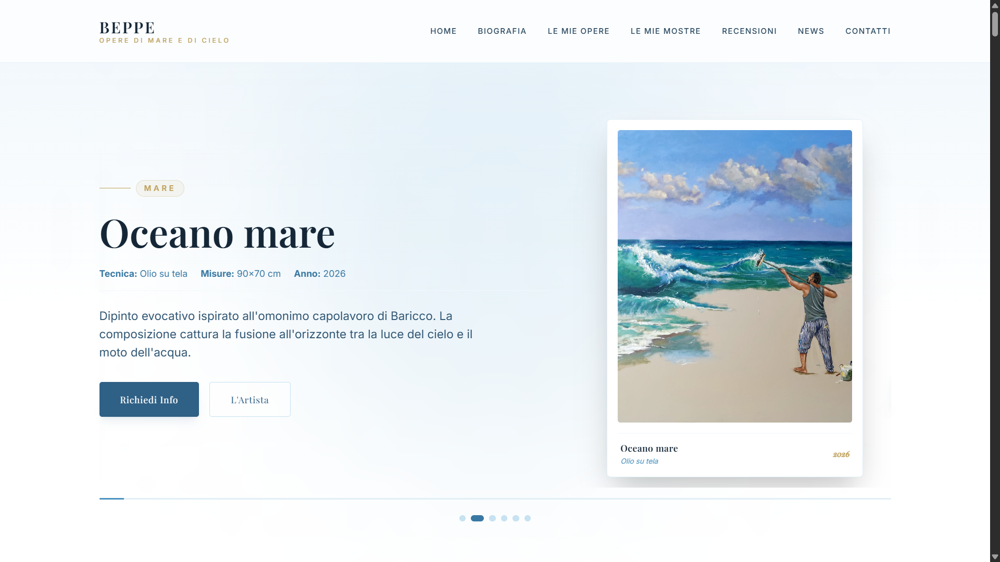
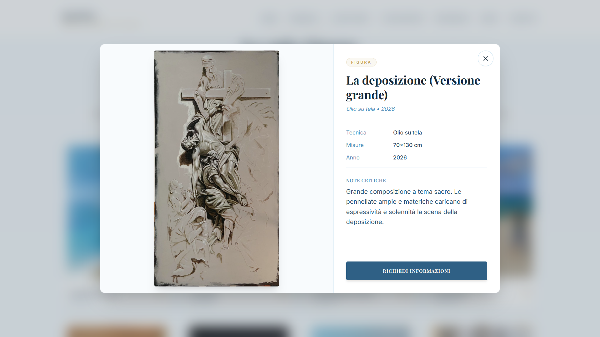
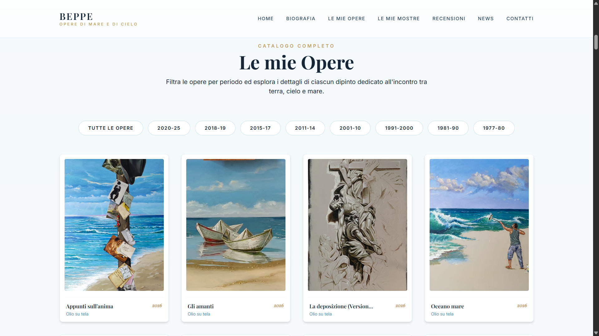
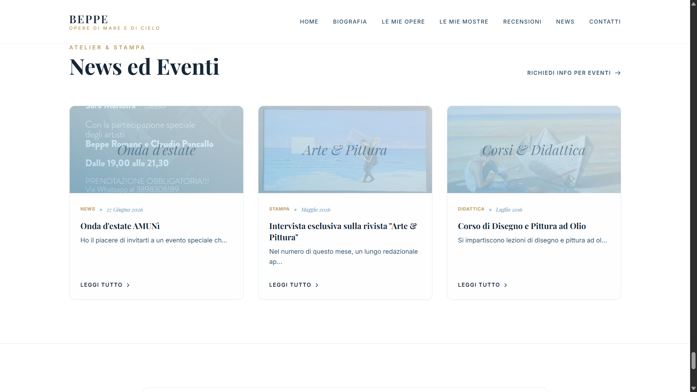
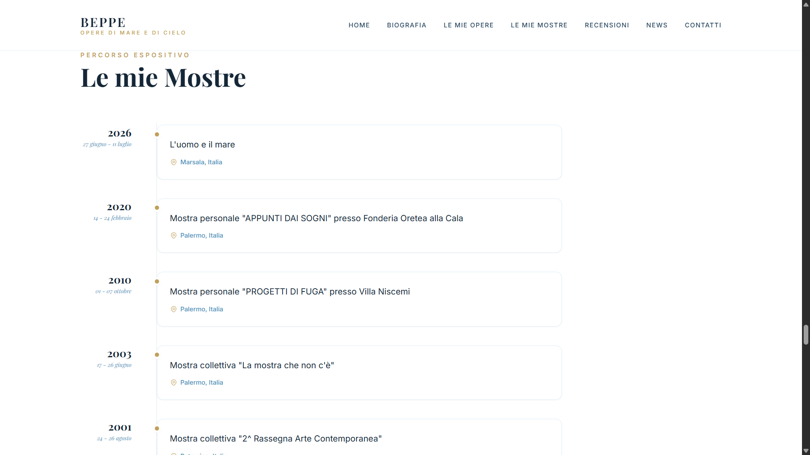
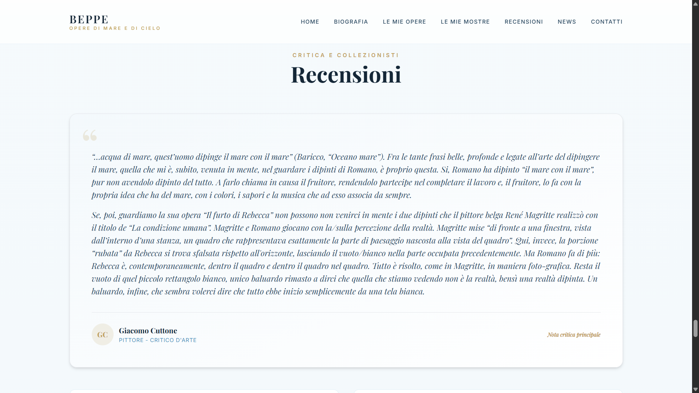
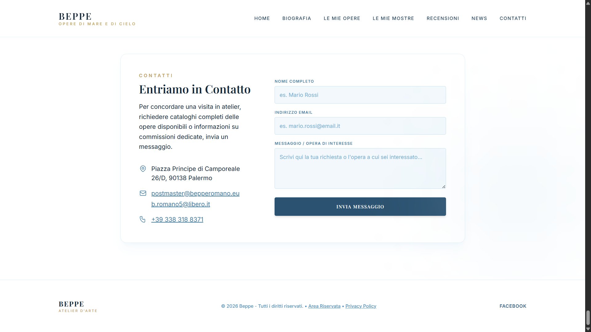
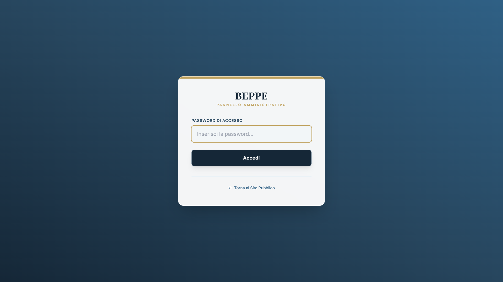
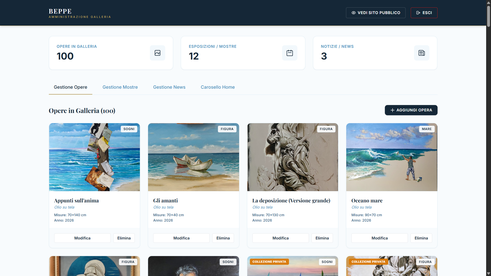

BeppeRomano.eu
Sito ufficiale e galleria d'arte digitale del pittore Beppe Romano

Il Progetto
BeppeRomano.eu è il sito web ufficiale e galleria d'arte digitale del pittore Beppe Romano. Il progetto è concepito come una vetrina virtuale che valorizza la lunga carriera artistica dell'artista, iniziata nel 1977. Offre una panoramica completa dei suoi dipinti, delle sue mostre ed esposizioni storiche e delle news relative ai suoi corsi ed eventi in atelier.
Per massimizzare le prestazioni e ridurre a zero i costi di manutenzione e complessità delle infrastrutture database, il sito adotta un'architettura flat-file sviluppata in PHP nativo. Tutte le informazioni su opere, mostre e news sono gestite tramite file JSON strutturati e un pannello di controllo ad accesso riservato per l'amministratore, integrando la massima sicurezza grazie all'uso di variabili d'ambiente .env e restrizioni via .htaccess.
Tecnologie Utilizzate
- PHP (Nativo)
- JSON (Flat-File DB)
- Tailwind CSS
- JavaScript (ES6)
- .htaccess / .env (Security)
Caratteristiche Principali
- Home & Biografia: Pagina di benvenuto curata nei minimi dettagli con biografia, note critiche e visione artistica dell'artista.
- Carosello in Evidenza: Slideshow dinamico e interattivo che mostra le opere scelte in evidenza direttamente dall'artista.
- Galleria delle Opere: Catalogo ordinato cronologicamente con vista lightbox a schermo intero e supporto alla navigazione da tastiera.
- Gestione Mostre: Elenco strutturato delle mostre personali e collettive realizzate dal 1981 ad oggi.
- Sezione News: Spazio dedicato agli aggiornamenti e alla didattica (es. corsi di pittura ad olio ed eventi in atelier).
- Pannello di Amministrazione: Area riservata (
zxyanm.php) protetta da password cifrata con Bcrypt per la gestione in tempo reale di opere, carosello, mostre e news. - Sicurezza e Protezione: Configurazione di
.htaccessper impedire l'accesso diretto via browser ai file di configurazione ed ai file di dati.
Screenshot







